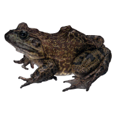

or...
How this works
You need whizzywig.js, version 53 or later and
whizzywig.htm on your server. ←Follow that link and
File > Save as... to get a copy.
You may need to edit it to get the path to whizzywig.js right and to play with the settings in the //CONFIGURE section

Right click and View Source on this page to see what you need in your html pages.
The function popwhizz(id)
on this page pops up a whizzywig editor (user can resize it), prefilled
with the content of the DIV you specify with the id parameter. The
id parameter is the id of the DIV.
When the user clicks Update the pop-up closes and it updates the DIV.
It does not have to be a DIV: it can be any element that can contain other block level elements, e.g. TD.
This demo shows 2 different ways of invoking the editor:
- click the text, or
- a button
- but you could use other events.
You need some kind of function to copy the edited DIVS into hidden form fields on submit. The one on this page is just an example.